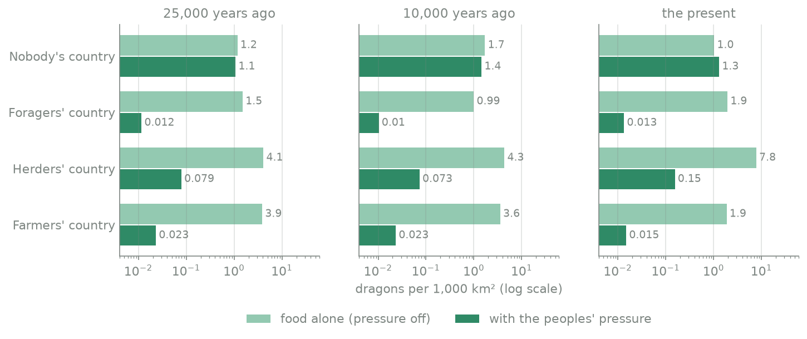
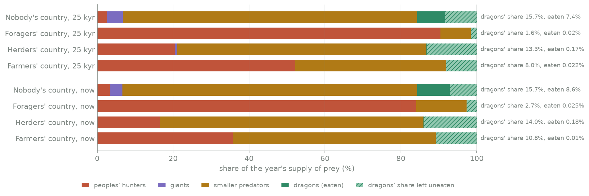
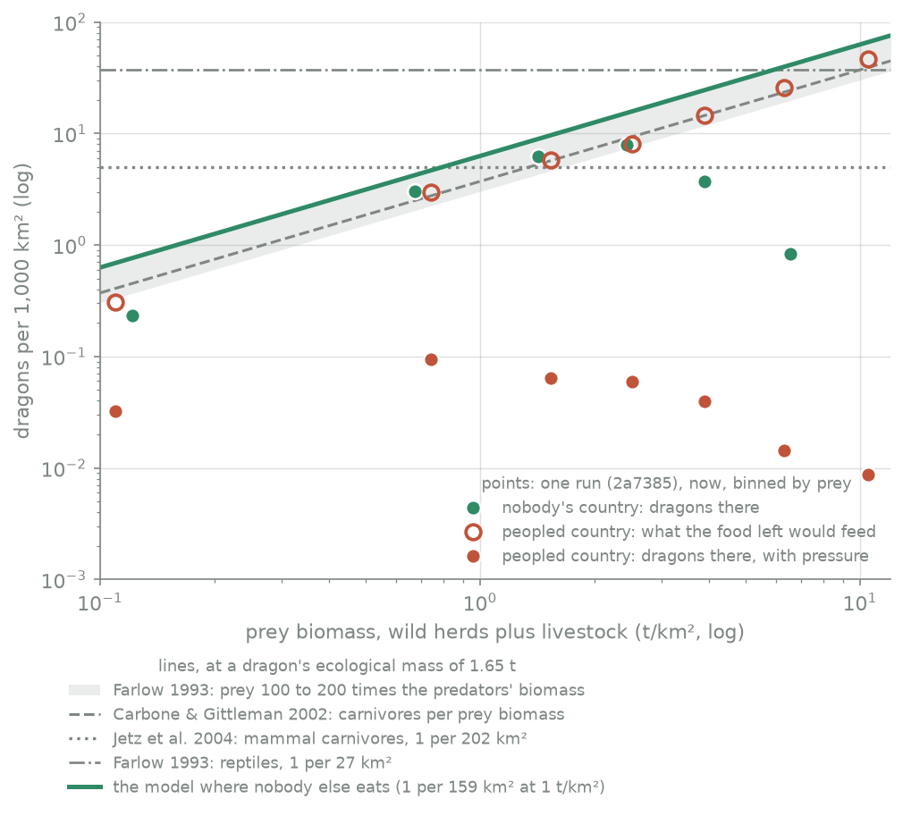
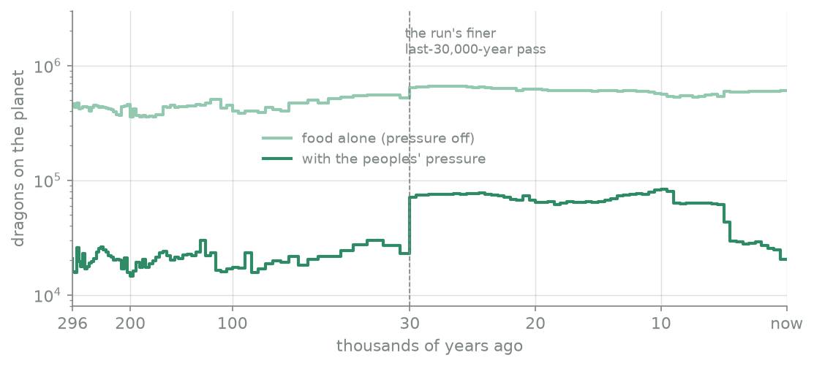
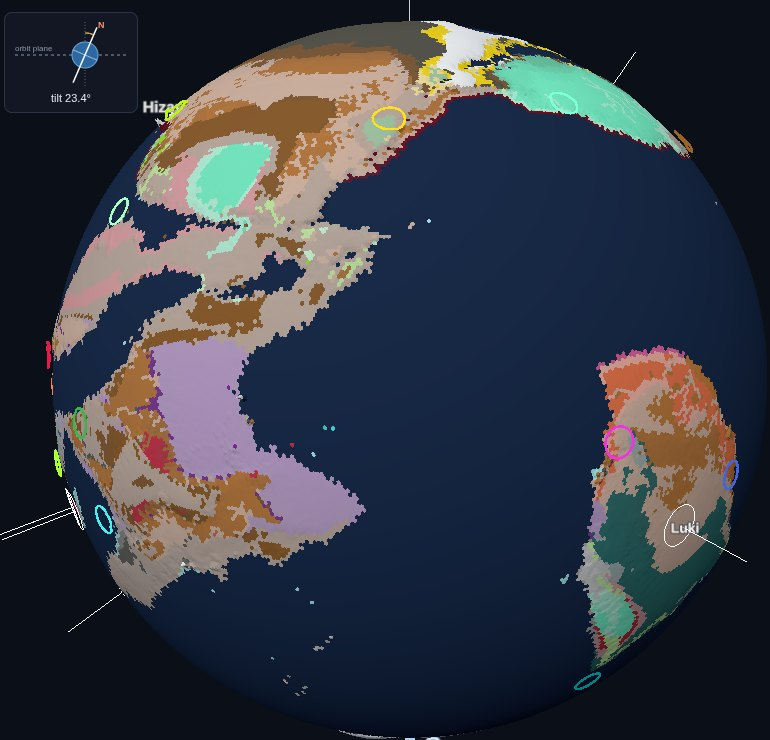
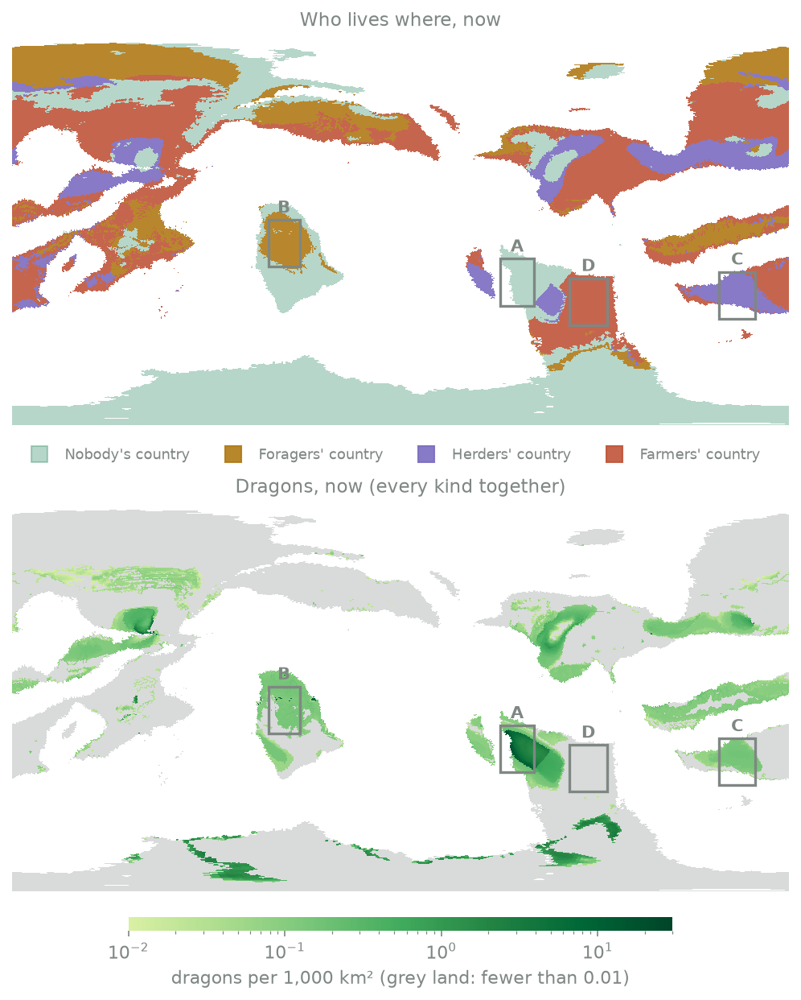

Field report · megafauna · fun lanes 43 to 45b
Dragons in this model are as many as the land can feed, minus what the peoples take, minus what the peoples' fear and spears take. Plants grow; grazers eat the plants; about a tenth of the grazers can be taken each year without the herds shrinking. The peoples' hunters eat first. Giants eat next. The rest of the hunters split what is left by body size. The small and middle-sized hunters get about 83% of it and the dragons about 17%. A dragon eats about 2.7 tonnes of meat a year, so on land with 1 tonne of grazers per km² there is about one dragon per 160 km².
Where nobody lives, that gives about 1 dragon per 770 km² today, averaged over all the empty land in the sweep (much of it is poor desert and tundra). Rich empty grassland could feed one dragon per 23 km². Where peoples live, dragons are far scarcer: about 1 per 6,500 km² in herders' country and about 1 per 70,000 km² in foragers' or farmers' country. That is only 1% to 2% of what the food there would feed. Most of the loss comes from the peoples' pressure, a rule that is still a placeholder.
A Sword Coast-sized region (2,414 × 1,609 km, about 3.9 million km², roughly western Europe from Gibraltar to Denmark, Section 4) would hold about 5,000 dragons if empty, about 600 if herders held it, and about 50 to 60 if foragers or farmers held it. With the peoples' pressure turned off, the food alone would feed 4,000 to 30,000 there, and up to about 170,000 if the whole area were rich grassland with nobody else eating.
The weak links: several food numbers have no source yet (PW-1019), dense "hunter" peoples eat almost all the wild game (PW-1018), and the pressure rule is set by hand. Section 7 lists them.
We describe how procgen_world sets dragon numbers from food (the PW-990 option B ruling) and measure the result on a 24-run sweep. Wild herbivore biomass follows net primary production through the McNaughton et al. (1989) fit. A fixed 10% a year of it, plus 10% a year of the herders' stock, is the year's supply. The peoples' hunters take first, then the giants, then the rest of the predator guild by the size classes of Carbone, Turvey & Bielby (2011). The dragons get the apex class's 17%, and each needs 2.7 t of prey a year from a reptile field metabolic rate (Nagy, Girard & Brown 1999). Where nobody else eats, this gives 1 dragon per 159 km² per t/km² of prey. That sits between Carbone & Gittleman's (2002) carnivore line (1 per 269 km²) and Farlow's (1993) reptile density line (1 per 27 km²), and gives a prey to dragon biomass ratio of about 127:1 (dragons of every age), inside the 100:1 to 200:1 that Farlow gives for modern large-mammal communities. Across the sweep, land nobody holds carries 1.1 to 1.4 dragons per 1,000 km² at 25 kyr, 10 kyr and the present. Peopled land carries 0.010 to 0.16 per 1,000 km², 0.7% to 2% of what the food alone would feed there. Two model choices drive most of the gap: the peoples' hunting share (PW-1018) and the pressure rule (stage 3, not yet sourced).
Each step takes the one before it as input. The numbers are the model's own (from planet/lineages/prey.py, dragon_ages.py and history/megafauna.py), worked out in dragon_numbers.py.
megafauna.OFFTAKE), plus 10% of the herders' stock (STOCK_TOLERABLE). Neither figure has a source (PW-991). Two papers bound the first. Farlow gives prey turnover as 0.94 M−0.28 a year (M in kg; Farlow 1993, eq. 6, p. 172), which is 0.26, 0.16 and 0.14 a year for 100, 500 and 1,000 kg grazers. McNaughton et al.'s own net secondary production fit, log10 NSP = 1.10 log10 NAP − 3.27 (p. 143), set against their biomass fit, gives herbivore production of 1.1, 0.77 and 0.54 times the standing biomass a year at the three places above (our arithmetic). So 10% a year is well inside what the herds make. It is a cautious, flat figure: the model does not vary it with prey size.PERSON_KCAL_YR, WILD_MEAT), at 625,000 edible kcal per 0.5 t head. That is 0.32 t of live prey a year per forager and 0.032 t per farmer or herder. All three numbers are unsourced (PW-1019). The sum is taken over a dragon's 60 km reach and capped at the wild supply.giant_cattle_yr). They take 0.03% to 4% of the supply (Section 3).guild_ratio()). The dragons are that apex class. One Cretaceous guild stands in for every world's guild (PW-1019). Farlow makes the same point in words: a community with dinosaur-sized predators would also hold smaller predators eating some of the same prey production (Farlow 1993, p. 176).meta.dragon_km2).| Step | Model value | Source |
|---|---|---|
| Grazers from NPP | log B = 1.52 log NAP − 4.79 (kJ) | McNaughton et al. 1989, p. 143; unit factors unsourced except 7 kJ/g (Farlow 1993, p. 172) |
| Yearly offtake | 10% wild + 10% stock | unsourced (PW-991); bounded by Farlow 1993 eq. 6, p. 172 |
| A person's game | 0.32 t/yr forager, 0.032 t/yr others | unsourced (PW-1019) |
| Guild split | 83.2% smaller, 16.8% dragons | Carbone et al. 2011, Table 1, p. 2683; M0.75 weighting is the model's |
| A dragon's food | 10,400 kcal/day = 2.7 t/yr | Nagy et al. 1999, Table 2, pp. 260–261, extrapolated |
| Density, nobody else eating | 1 per 159 km² per t/km² | the product of the above |
All numbers come from fun lane 45b's probe runs (docs/review/megafauna/probe.py) on the dnd tree at L7. The default sweep is 6 worlds (2a7385, 1df1c3, e71172, 6909cb, a12762, 067778) × rolls 7000 to 7003, with the food budget and the peoples' pressure on. A diagnostic arm sets the pressure to zero (--no-press: PRESS_N0 = 1012) on the same 6 worlds at roll 7000. That removes both the persecution and the overkill of wild herds, since both read the same pressure field. It is a measuring device, not a model setting.
At the steps nearest 25 kyr, 10 kyr and the present, each land cell is put in one class. "Nobody's country" is land with fewer than 0.02 people per km², summed over every people. Otherwise the cell goes to foragers, herders or farmers, whichever way of life holds the most people there (from landuse.shares: a people with half or more of its use in herding is a herding people, and so on). "Dragons per 1,000 km²" is the expected number of dragons of every kind in a class's cells, summed over the runs, over the class's area. The cells where no dragon kind lives count as zero, as they would in a real survey. One run, 2a7385 roll 7000, also saved its per-cell fields, which give the rich-and-poor split and the maps.

charts.py; data: numbers.json, sweep.eras and nopress.eras.| Country | Share of land, now | 25 kyr | 10 kyr | Now | Now, range over 24 runs | Now, pressure off |
|---|---|---|---|---|---|---|
| Nobody's | 24% | 1.07 | 1.44 | 1.30 | 0.15 to 3.98 | 1.03 |
| Foragers' | 23% | 0.012 | 0.010 | 0.013 | 0.001 to 0.037 | 1.95 |
| Herders' | 7% | 0.079 | 0.073 | 0.155 | 0.025 to 0.39 | 7.77 |
| Farmers' | 20% | 0.023 | 0.023 | 0.015 | 0.002 to 0.033 | 1.87 |
| All land | 100% | 0.40 | 0.47 | 0.34 | 0.05 to 0.91 | 2.39 |
Dragons per 1,000 km². The rest of the land (26% now) is held mostly by peoples of other ways of life (the probe's "others" class) and is left out of the four rows.
Nobody's country holds 1.1 to 1.4 dragons per 1,000 km² at all three eras, about 1 per 700 to 950 km². That is far sparser than the 1 per 159 km² per t/km² of the formula because most empty land is poor: its average prey is 0.4 t/km² (Section 3.3). Peopled country holds 0.010 to 0.16 per 1,000 km². Comparing the same worlds and roll with the pressure on and off, the peoples' pressure leaves 0.7% to 0.8% of the food-fed dragons in farmers' country, 0.8% to 1.1% in foragers' country and 1.7% to 2.0% in herders' country (pressure_keeps). In nobody's country it leaves 90% to 95%. Herders' country keeps the most dragons of the peopled kinds because herders live thinly and their stock adds to the supply.
Across the sweep there are 62,600 dragons per run at the present (8,260 to 162,000 by world and roll). With the pressure off, the 6 runs hold 174,000 to 604,000.

sweep.eras.*.shares.Where nobody lives, the smaller predators take 78% of the supply and the dragons' share is 15.7%; the dragons eat 7.4% of the supply at 25 kyr and 8.6% now. In foragers' country the peoples' hunters take 90% at 25 kyr and 84% now. That leaves the dragons a share of 1.6% to 2.7%, of which they eat 0.02%. This is the PW-1018 problem: the dnd tree's dense "hunter" peoples (halflings at 12 per km², goblins at 5) eat the game. In farmers' country the peoples take 52% at 25 kyr and 36% now, as the herds of livestock grow. Over all land, the dragons eat 0.85% of the supply at 25 kyr and 0.52% now.

The literature lines, all evaluated at 1.65 t:
In nobody's country the points follow the model line up to about 2.5 t/km², then fall away on the richest land. In peopled country the food left after the peoples (open circles) still sits close to the line, because livestock adds to the supply. The pressure (filled dots) cuts the dragons there to 0.01 to 0.1 per 1,000 km² whatever the prey.
The rich-and-poor split for the same run shows the pattern by class (below). Poor is under 1 t/km² of prey, middling 1 to 3, rich 3 and over.
| Now, run 2a7385/7000 | Poor | Middling | Rich |
|---|---|---|---|
| Nobody's: dragons (food alone) | 0.35 (0.86) | 6.8 (10.5) | 1.9 (36.9) |
| Foragers' | 0.001 (0.07) | 0.064 (3.2) | 0.054 (10.5) |
| Herders' | 0.26 (2.6) | 0.11 (10.6) | 0.041 (34.3) |
| Farmers' | 0.009 (0.47) | 0.013 (7.4) | 0.011 (27.1) |
Dragons per 1,000 km² with the pressure, and in brackets what the dragons' food share alone would feed. Data: cells_2a7385.0.by_class. Nobody's rich land is only 190 cells (0.6 million km²) in this run.
Two things stand out. Rich land feeds many more dragons than poor land, by 40 times in nobody's country. But on rich land the dragons actually there fall well short of that, even where nobody lives. The likely reason is that "nobody's country" still includes land that a few people visit (up to 0.02 per km²), and the pressure rule presses dragons part of the way down there: at 0.02 people per km² the pressure is 0.33, which on rich land cuts a dragon's density to about 0.18 of its natural value. Rich land is also where peoples live next door. This is an inference from the rule, not yet measured (inbox draft).

series.With the peoples' pressure, this world holds about 76,000 dragons at 25 kyr and 82,000 at 10 kyr, then falls to about 20,000 now, most of the fall coming after 5 kyr ago. With the pressure off it holds about 530,000 to 660,000 over the last 30 kyr. Before the present plates (the deep epoch, over 300 kyr ago) the model sets a flat density at the land's median prey, since the prey field of today's plates does not apply. That gives the "age of dragons" peak of 1.6 million dragons 10 million years ago on this world. That number rests on a flat rule and should be read as an order of magnitude.

planet serve, peoples layer, present) on world 2a7385, peoples run 3097e3. This run is from 2026-10-27, before lanes 43 to 45b, so its dragon counts follow the older density rule. It shows the world's peoples; Figure 6 shows the new densities. The viewer has no dragon-density layer yet, and picking a dragon kind in the peoples panel did not redraw in a headless browser (inbox draft). Script: shot.py, crop.py.
charts.py; box numbers: charts/boxes.json.The owner gives the Sword Coast as roughly 1,500 miles north to south and 1,000 miles wide on most official maps. At 1.609 km to the mile that is 2,414 km × 1,609 km = 3.88 million km². The numbers below treat all of it as land.
A real region of the same size and shape. The Sword Coast is a long coast with the sea to the west. Western Europe has the same layout, so it fits better than the US eastern seaboard, whose sea lies to the east. A box of the same size centred on 47°N, 0.5°E runs from about 36.1°N to 57.9°N and 10.1°W to 11.1°E (approximate: 2,414 km is 21.7° of latitude, and 1,609 km is 21.2° of longitude at 47°N). On a sphere of radius 6,371 km that box covers 3.86 million km². It reaches from the Strait of Gibraltar to about the latitude of the northern tip of Denmark, and from the Atlantic coasts of Ireland and Portugal to about the longitude of Munich. A large part of it is sea (the Bay of Biscay, the North Sea and part of the western Mediterranean), so its land is well under the full area. This page has not measured how much.
| A Sword Coast-sized area, if all of it were… | With the peoples' pressure | Pressure off |
|---|---|---|
| Nobody's country, sweep average, now | 5,100 | 4,000 |
| Nobody's country, 25 kyr ago | 4,200 | 4,600 |
| Herders' country (lightly settled), now | 600 | 30,200 |
| Foragers' country (lightly settled), now | 52 | 7,600 |
| Farmers' country (densely settled), now | 58 | 7,300 |
| Foragers' country, 25 kyr ago | 45 | 5,900 |
| Farmers' country, 25 kyr ago | 90 | 15,000 |
Dragons in 3.88 million km² at the sweep's pooled density (sword_coast.counts). Pressure-off figures are from the 6-run diagnostic.
| Rich and poor, one run (2a7385/7000), now | Poor | Rich |
|---|---|---|
| Nobody's country: dragons there (food alone) | 1,400 (3,400) | 7,300 (143,000) |
| Foragers' country | 2 (280) | 210 (40,600) |
| Herders' country | 1,000 (9,900) | 160 (133,000) |
| Farmers' country | 34 (1,800) | 41 (105,000) |
| The formula alone, nobody else eating, dragons everywhere | 14,600 at 0.6 t/km² | 171,000 at 7 t/km² |
"Poor" averages 0.10 to 0.46 t/km² of prey and "rich" 4.4 to 6.8 t/km², by class (sword_coast.rich_poor.0, sword_coast.formula).
The same box on our world. Figure 6's four boxes put a Sword Coast-sized area on 2a7385 where one kind of country fills it most, among boxes at least 70% land. The counts are the run's expected dragons on the box's land (charts/boxes.json):
| Box | Centre | Mostly | Land in box | Mean prey | Dragons | Food alone |
|---|---|---|---|---|---|---|
| A | 24°S, 54°E | nobody's (100%) | 2.59 M km² | 1.31 t/km² | 8,230 | 19,200 |
| B | 6°S, 54°W | foragers' (94%) | 4.13 M km² | 2.55 t/km² | 712 | 26,100 |
| C | 30°S, 156°E | herders' (94%) | 2.89 M km² | 3.39 t/km² | 334 | 52,000 |
| D | 33°S, 87°E | farmers' (100%) | 3.96 M km² | 4.94 t/km² | 0 | 77,700 |
Land is counted as cells × 3,113 km². The model's grid cells are not all the same size, so box B's land comes out 7% above the box's own area. Box D's farmers' country holds no dragon kind at all in this run.
Canon dragon counts for the Sword Coast are not quoted here: none is on file, and the owner ruled on 10-29 that there is no external target for dragon numbers (PW-990).
| Choice | Paper | Model | Why |
|---|---|---|---|
| Herbivore biomass from NPP | McNaughton et al. 1989, p. 143: slope 1.52 | Same fit; unit factors added | The paper gives no conversions. Coe et al. 1976 (slope 1.094) covers only semi-arid parks. |
| Yearly offtake | Farlow 1993, eq. 6, p. 172: 0.14 to 0.26/yr turnover | Flat 10%/yr | A cautious share of turnover for the whole guild. Unsourced (PW-991). |
| Guild split | Carbone et al. 2011, Table 1: share of individuals | Individuals × M0.75 | The budget needs food, not head counts. The exponent is Kleiber's, not the paper's (PW-1019). |
| Dragon intake | Nagy et al. 1999, Table 2: reptiles | Same fit, up to an ancient's 24 t average | Dragons as reptile-rate eaters. The fit's largest animal is 45 kg. |
| Density from prey | Carbone & Gittleman 2002: 89.1 M−1.05 | Food budget; Carbone kept as a cross-check | Owner ruling PW-990 B: food decides. Result 1.7× denser. |
| Density by mass alone | Jetz et al. 2004 (mammals); Farlow 1993 (reptiles) | Not used for density | Neither reads prey. The model falls between them on 0.8 to 6 t/km². |
| Wild herds lost to peoples | Sandom et al. 2014, Fig. 3, p. 5: share of species lost | 60% of biomass (OVERKILL) | The paper counts species, not biomass. 0.6 is a judgement. |
| Pressure on dragons | Ripple et al. 2014, p. 1241484-1: ranges cut to 47% on average | Density pressed toward 1 per 5,000 km² | Ripple gives range, not density against potential. The rule has no source (stage 3). |
The chain is the standard form of a shared food budget. Farlow builds predator density the same way: predator density × mass × mass-specific intake = prey density × mass × turnover (Farlow 1993, eqs. 3 to 5, p. 172). The model's departures are in what it puts at each step: a flat offtake, a fixed guild split borrowed from one Cretaceous fauna, and a reptile's metabolism for an animal about 37 times heavier than the heaviest reptile in the fit.
The result lands in a defensible place where nobody lives. A 1.65 t dragon at 1 per 159 km² per t/km² sits between the mammal-carnivore lines and the reptile line. Its prey to dragon biomass ratio of about 127:1 falls inside what whole modern mammal predator guilds reach (Farlow's 100:1 to 200:1), which fits an animal that eats at a reptile's rate. A reviewer might argue the other way: the guild split gives the dragons only 17% of the food, yet the dragons alone reach a whole modern guild's biomass ratio, and the smaller predators come on top. If their biomass follows Carbone et al.'s classes (individuals × mass: the classes under 1 t hold 1.8 times the biomass of the classes of 1 t and up), the whole guild comes to about 46:1, at Farlow's lowest observed case (our arithmetic). Both readings follow from the low reptile intake; neither is tested against a living guild (PW-1019 asks for a Serengeti-style check).
Peopled country is where the model is weakest. Two separate things make it 50 to 150 times emptier of dragons than the food alone would allow:
spec.py's note, groups of 25 to 1,000 live at 0.03 to 0.09 people per km². The dnd tree's halflings live at 12 per km² and goblins at 5 while being treated as half-game eaters. The PW-1018 lean (the game share falls with density) would leave more for the dragons before farming.Stage 3 of PW-977 replaces the pressure rule with persecution as a kill rate set against the dragons' slow breeding. The equilibrium is the natural density × (1 − kill rate ÷ the dragons' maximum growth rate), with the kill rate rising with the peoples' numbers and means (weapons, organisation, PW-961). The fixed 1 per 5,000 km² then retires. Alongside it, the owner asked for a viewer control for dragon abundance, from "they're everywhere" to "one left somewhere", so a user can set how hard peoples push. A dragon-density layer in the viewer would let the owner see Figure 6 on any run.
Every detail below is taken from the PDF on file in docs/references/megafauna/. A DOI is given only where the PDF shows one.
On file, not used here. Marshall et al. 2021 (dinosaur density intercepts; the model's "mesotherm" mode), Burness, Diamond & Flannery 2001 (top species' mass against land area), Carbone, Teacher & Rowcliffe 2007 (costs of carnivory), McNab 2009 and Seymour 2013 (dinosaur and crocodile energetics), Nagy 2005 (a restatement of the 1999 fits), Hamilton et al. 2009 (hunter-gatherer population stability), and the flight papers (Witton & Habib 2010, Sato et al. 2009, Ksepka 2014, Chatterjee et al. 2007, Alexander 2007, Field et al. 2013). They bear on dragon size and flight, not on dragon numbers.
Every number here is in numbers.json, written by dragon_numbers.py from the 45b probe outputs. The charts come from charts.py, the screenshot from shot.py and crop.py. Every cited claim is listed with its page and its model counterpart in claims.md.